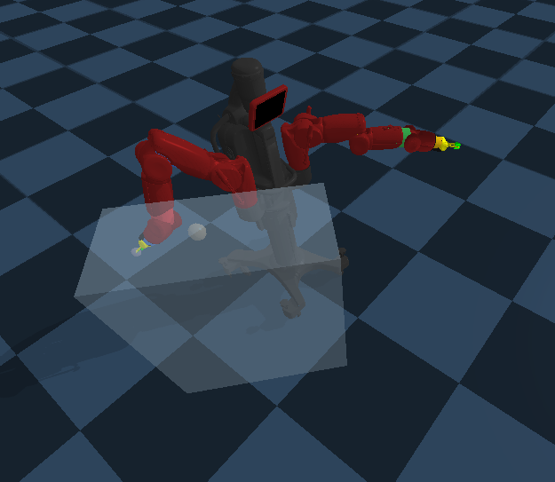

Robotics is a promising interdisciplinary field with application areas that free humans
of manual labor or high risk services. In order to build robots that have the capability of taking jobs that require manual labor or services of high risk and operating in
the world, it is essential to provide the robots with the necessary manipulation skills.
Reinforcement Learning (RL) paradigm is used in order to build robot manipulation skills.
The targeted manipulation skills are: reach a random target point,
push an object to a random target point, and grasp a specific object in a specific position.
Both shaped and sparse reward signals are used in this project. The RL algorithms that are used
for training are Deep Deterministic Policy Gradients (DDPG) and Soft Acor Critic (SAC) with learned temperature parameter.
Because shaped rewards are inclined to bias solutions towards suboptimal policies,
we investigate the performance of sparse rewards. However, sparse rewards
make it very difficult to encounter a reward that indicates success in the already complex state-action space of the robot.
Not encountering sufficient rewards that indicate
success cripples the learning process due to lack of positive feedback to the system. In
order to remedy this issue, we use Hindsight Experience Replay
(HER) to increase the probability of encountering successful sparse rewards valid for
multi task environments while at the same time ensuring learning from mistakes. We also
modify HER with domain knowledge such that only successful proposals arer added to the Hindsight buffer.
This approach significantly improves learning performance. Robot is successful in
learning to reach a target, to push an object, and to grasp an object.

|
|
|
{kind=link}